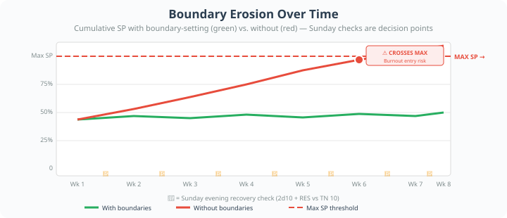
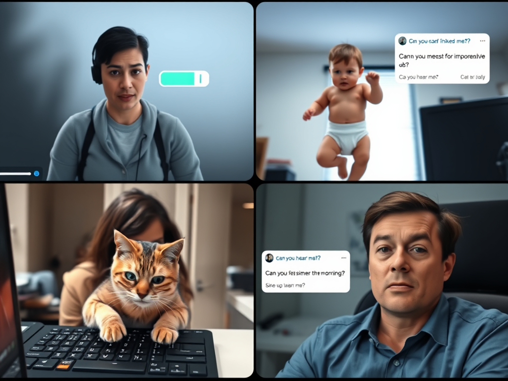
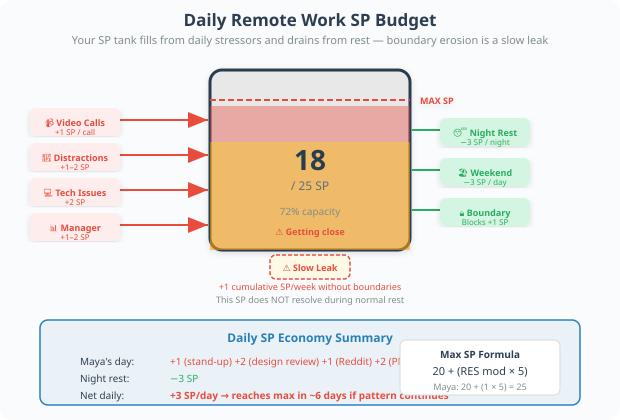
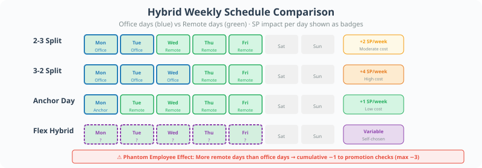
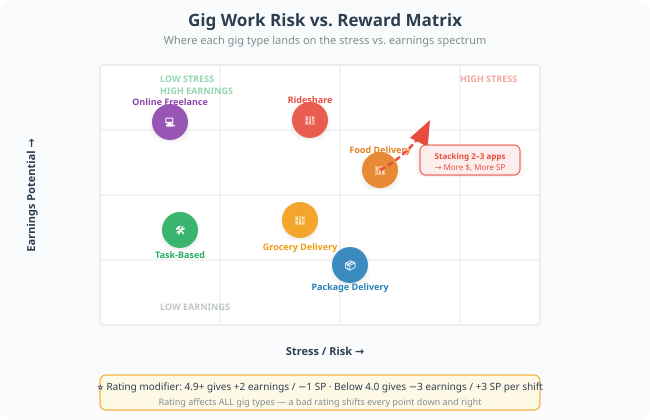
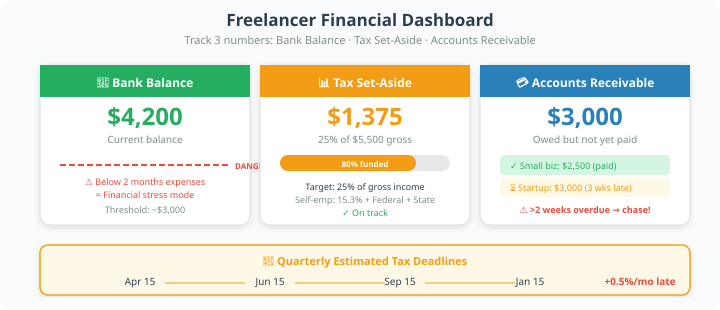
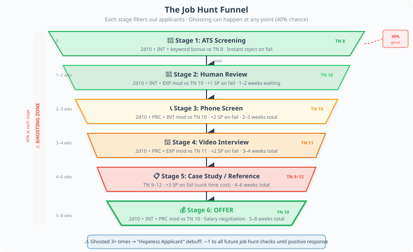
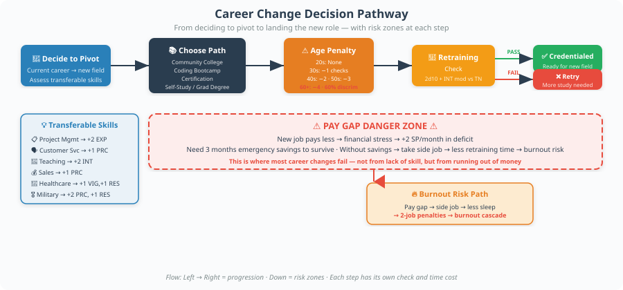
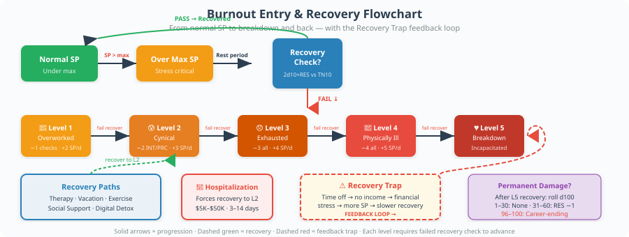

Introduction: Work Is the Game
For most adults, work consumes 40+ hours per week and defines their identity, income, social circle, and stress levels. In Reality RPG, work is not a background activity — it is a central gameplay pillar with its own mechanics, risk/reward systems, and cascading consequences that affect every other aspect of a character's life.
Every work-related action resolves using 2d10 + modifier vs TN. Modifiers come from relevant attributes (VIG, INT, EXP, DXT, RES, PRC) plus any applicable skills, experience bonuses, or situational penalties. The GM sets the Target Number (TN) based on difficulty — typically TN 8 for routine tasks, TN 10 for moderate difficulty, TN 12+ for hard or high-stakes situations.
All work generates Stress Points (SP). A character's maximum SP equals 20 + (RES mod × 5). Accumulating SP beyond your maximum causes a stress event — breakdowns, mistakes, health issues, or relationship damage.
This page covers nine major areas of modern work life:
- Remote Work / Telecommuting
- Hybrid Work
- Gig Economy
- Working Multiple Jobs
- Freelancing and Contract Work
- Job Hunting in the Modern Era
- Career Changes
- Workplace Politics
- Burnout and Recovery
🏠 1. Remote Work / Telecommuting
Home Office Setup
Before a character can work from home effectively, they need equipment. Setup costs vary based on the quality of the workspace and the demands of the job.
Kitchen Table
Cost: $0–$100
Includes: Existing laptop, chair, natural light
Work Bonus: −2 to all work checks
Comfort: High distraction
Basic Setup
Cost: $500–$1,000
Includes: Standing desk, ergonomic chair, dual monitor
Work Bonus: None
Comfort: Acceptable
Professional
Cost: $1,000–$2,000
Includes: Dedicated office, noise-cancelling headset, ring light, quality webcam
Work Bonus: +1 to video call checks
Comfort: Good
Executive
Cost: $2,000–$3,000+
Includes: Soundproofed room, professional lighting, multiple monitors, backup internet, ergonomic everything
Work Bonus: +2 to all work checks
Comfort: Excellent

Many companies offer a "remote work stipend" of $500–$1,500 one-time or annually. Characters should check their employee handbook. Using company money for setup removes the financial burden but may mean the company has rights to the equipment.
Daily Remote Work Mechanics
Every remote workday, the player rolls for potential distractions and stress accumulators:
Productivity Tracking & Manager Checks
Remote workers are often subject to productivity monitoring. Managers may request status updates, track time logs, or use monitoring software.
Blurring Boundaries & "Always On" Culture
Remote work erases the physical separation between work and home. Without deliberate boundaries, work creeps into personal time.
Each week of remote work without deliberate boundary-setting, the character gains +1 cumulative SP that does not resolve during normal rest. Characters must make a 2d10 + RES mod vs TN 10 check each Sunday evening to "clock off" mentally. Failure means they check email or worry about work during personal time, adding +2 SP.

Proximity Bias — The Invisible Ceiling
Research consistently shows that remote workers are promoted less frequently than in-office workers. Managers unconsciously favor people they see face-to-face.
📉 Remote Penalties
📈 Promotion consideration: −2 to promotion checks
🎯 Visibility with leadership: −1 to all networking checks
💡 Idea attribution: −2 (ideas more easily stolen)
🏆 Award recognition: −1 to being selected
📈 Mitigations
📈 Promotion: +1 if character volunteers for in-office days
🎯 Visibility: +2 if character initiates 1:1 video calls with manager
💡 Idea attribution: +1 if character documents ideas in writing
🏆 Award recognition: None — this is systemic

Morning: Maya has a stand-up meeting (30 min video call) → +1 SP. She rolls for chore temptation: 2d10 + 0 vs TN 9. She rolls 7+6=13 → success, resists the laundry.
Midday: A 1-hour video design review → +2 SP (two 30-min blocks). Social media drift check: 2d10 + 1 vs TN 11. She rolls 3+4=7+1=8 → failure → loses 45 minutes scrolling Reddit, +1 SP.
Afternoon: Her manager sends an unexpected audit request. 2d10 + 2 vs TN 10. She rolls 5+8=13+2=15 → success, looks productive. Another video call (45 min) → +2 SP.
Evening boundary check: 2d10 + 1 vs TN 10. She rolls 9+2=11+1=12 → success. She closes her laptop and watches a movie.
Total SP gained today: 6 SP. If she started at 12/25, she's now at 18/25 — getting close to dangerous territory. The GM may start applying stress effects if she crosses 25.


🔄 2. Hybrid Work
The Best of Both Worlds? Or the Worst?
Hybrid work splits a character's week between in-office and remote days. This creates unique challenges: commuting on some days, being present for office politics on others, and trying to coordinate schedules when half the team is always remote.
Hybrid Schedule Types
2-3 Split
Office: 2 days in-office
Commute Cost: Moderate
SP Impact: +1 SP on office days
Social: +1 to networking on office days
3-2 Split
Office: 3 days in-office
Commute Cost: High
SP Impact: +1 SP on office days; +1 cumulative weekly
Social: +2 to networking on office days
Anchor Day
Office: 1 mandatory team day
Commute Cost: Low
SP Impact: +1 SP on anchor day only
Social: +1 on anchor day; −1 other days
Flex Hybrid
Office: Self-chosen
Commute Cost: Variable
SP Impact: +1 SP per office day; −1 SP per remote day
Social: ±0 depending on choice

Hybrid-Specific Challenges
Hybrid workers face a unique set of problems that neither full-remote nor full-office workers experience:
When a hybrid worker is remote, they are less visible than full-remote workers (who are expected to be remote) and less present than full-office workers (who are always there). Each week the character spends more remote days than office days, they gain a cumulative −1 to all promotion and visibility checks (stacks to a maximum of −3).

Monday (office day): Commute check: 2d10 + 1 vs TN 8. Rolls 4+3=7+1=8 → ties — partial success, arrives but stressed. +2 SP from commute. In the office, he overhears a key project change → gains advantage on next related check.
Tuesday (office day): Commute check: 2d10 + 1 vs TN 8. Rolls 2+5=7+1=8 → ties again. +2 SP. Context switching check (switching from yesterday's WFH prep): 2d10 + 0 vs TN 9. Rolls 6+7=13 → success.
Wednesday (WFH): No commute SP. But scheduling conflict: a critical meeting was set for Wednesday and James is remote. He joins via video while everyone else is in a conference room. +1 SP from awkwardness. Social media drift: 2d10 + 0 vs TN 11. Rolls 1+3=4 → critical failure — loses 2 hours instead of 45 minutes, +2 SP.
Thursday (WFH): Home office has gotten messy. −1 to all work checks today. Manager sends a check-in email. 2d10 + EXP mod (12, +1) − 1 = vs TN 9. Rolls 8+5=13+0=13 → success.
Friday (office day): Commute +2 SP. By end of week: 9 SP accumulated. Started at 5/20, now at 14/20 — almost 70% capacity. Weekend recovery will only remove 3 SP (normal rest), leaving him at 11/20 to start next week. The GM notes he's trending toward burnout.
🚗 3. Gig Economy
Overview
The gig economy includes rideshare (Uber/Lyft), food delivery (DoorDash/Grubhub), grocery delivery (Instacart), task-based work (TaskRabbit), and freelance marketplaces (Fiverr/Upwork). These jobs offer flexibility but come with significant risks: no benefits, income volatility, and platform control.
Gig Work Setup Costs
Rideshare (Uber/Lyft)
Startup: $0 (app is free)
Weekly: $30–$80 (gas, wear)
Vehicle: Yes (4-door, <15 yrs old)
Background check: Yes
Food Delivery (DoorDash)
Startup: $0–$50 (insulation bag)
Weekly: $20–$60 (gas)
Vehicle: Yes (car, bike, or scooter)
Background check: Yes
Grocery Delivery (Instacart)
Startup: $0
Weekly: $20–$50 (gas, parking)
Vehicle: Yes
Background check: Yes
Package Delivery (Amazon Flex)
Startup: $0
Weekly: $15–$40 (gas)
Vehicle: Yes (SUV or van preferred)
Background check: Yes
Task-Based (TaskRabbit)
Startup: $0–$200 (tools)
Weekly: $0–$20
Vehicle: No
Background check: Yes
Online Freelance (Fiverr)
Startup: $0–$100
Weekly: $0
Vehicle: No
Background check: No
Daily Earnings Mechanic
Gig income is volatile. Each shift, the player rolls to determine earnings based on conditions, demand, and luck.
Roll 2d10 + INT mod + EXP mod + conditions vs TN 10. The result determines the earnings multiplier:
- 15+: Great shift — 1.5× base hourly rate
- 12–14: Good shift — 1.2× base
- 8–11: Average shift — 1.0× base
- 5–7: Slow shift — 0.7× base
- 2–4: Terrible shift — 0.4× base
- 1: Critical failure — incident occurs (accident, complaint, app deactivation threat)

Earnings Modifiers
Platform Rating System
Every gig platform tracks your rating. A low rating means fewer offers, lower pay, and potential deactivation.
4.9+
High offers · +2 earnings · −1 SP
4.7–4.8
Normal offers · +1 earnings
4.5–4.6
Normal offers · No mod
4.3–4.4
Reduced offers · −1 earnings · +1 SP/shift
4.0–4.2
Low offers · −2 earnings · +2 SP/shift
<4.0
Very Low offers · −3 earnings · +3 SP · Deactivation imminent
Multiple Gig Stacking
Many gig workers run 2–3 apps simultaneously to maximize earnings. This adds complexity and stress.
For each additional app beyond the first, add +1 to the earnings roll but also add +2 SP per shift and apply a −1 penalty to all non-earnings checks that shift (navigation, safety, customer interaction). Stacking more than 3 apps requires a 2d10 + RES mod vs TN 12 check per shift or the character becomes overwhelmed (automatic +4 SP and one app must be closed).
No Benefits — The Hidden Cost
Gig workers receive zero benefits: no health insurance, no paid time off, no retirement matching, no unemployment protection. The GM should track these costs:
Health Insurance
Cost to replace: $200–$500/month
Notes: ACA marketplace; higher deductible = more risk
PTO
Cost to replace: 0 (unpaid time = lost income)
Notes: Sick? You don't get paid
Retirement (401k match)
Cost to replace: $0–$300/month equivalent
Notes: Must self-fund IRA
Workers' Comp
Cost to replace: $0 (you're "independent")
Notes: Injury = total loss
Vehicle Maintenance Fund
Cost to replace: $100–$200/month
Notes: Breakdown = no income

Conditions: Saturday night (+2), stacking 2 apps (+1 earnings, +2 SP, −1 to safety), rain started (+2 earnings, +2 SP). Net earnings modifier: +5. Net SP: +4 for the shift before the roll.
Earnings roll: 2d10 + 0 + 1 + 5 = 2d10 + 6 vs TN 10. Carlos rolls 7+4=11+6=17 → 17: Great shift! 1.5× base rate. For an 8-hour shift: $18 × 8 × 1.5 = $216 gross.
But: Gas cost $35. Vehicle wear (tracked monthly): ~$12. Net: $169. He takes +4 SP from stacking and weather. His car needs a new transmission in 3 months ($2,400) and he has no savings.
Safety check during shift: A customer gives wrong address in a bad neighborhood at night. 2d10 + 0 (INT) − 1 (stacking penalty) vs TN 10. Rolls 3+9=12−1=11 → success, navigates safely but +1 SP from the stress.
Total SP for shift: 5 SP. Carlos started at 14/20. Now at 19/20 — one more bad day and he's over max.
⚡ 4. Working Multiple Jobs
Why People Do It
Characters work multiple jobs for survival, not ambition. Common reasons: student loans, supporting family members, saving for a house, medical debt, or simply because one job's income doesn't cover rent.
Time Budget Impact
A standard workday leaves roughly 4 hours of free time (after work, commute, meals, and sleep). A second job reduces this dramatically.
Standard
8 hrs work · 4 hrs free · 7–8 hrs sleep · 2–3 SP/day · Low burnout
Day + Evening
12–14 hrs work · 1.5 hrs free · 5–6 hrs sleep · 5–7 SP/day · Moderate burnout
Day + Night
14–16 hrs work · 0.5–1 hr free · 4–5 hrs sleep · 7–9 SP/day · High burnout
Extreme
16–18 hrs work · 0 hrs free · 3–4 hrs sleep · 9–12 SP/day · Extreme burnout
Multiple Job Mechanics
Characters working multiple jobs make all work checks at −1 per additional job. They also gain SP from each job independently. Sleep deprivation applies as follows:
- 6+ hours sleep: Normal SP recovery (lose 3 SP per rest day)
- 5 hours sleep: Reduced recovery (lose 1 SP per rest day); −1 to all checks
- 4 hours sleep: Minimal recovery (lose 0 SP per rest day); −2 to all checks; +2 SP daily
- <4 hours sleep: Health crisis imminent; GM calls for a 2d10 + VIG mod vs TN 12 check daily. Failure = collapse, illness, or accident.
Sleep Deprivation Effects
Yawning
Irritability · No penalty · +1 SP/day
Microsleeps
Memory lapses · −1 INT checks · +2 SP/day
Paranoia
Emotional instability · −2 all checks · +3 SP/day · RES halved
Collapse
Physical/mental collapse risk · −3 all checks · +4 SP/day · Auto stress events

Daily routine: She gets 5.5 hours of sleep. She has 1.5 hours of free time (usually spent eating or doing taxes).
Day job check (dental hygiene): A difficult patient appointment. 2d10 + 3 (EXP) − 1 (2 jobs) vs TN 10. Rolls 6+5=11+2=13 → success. +2 SP from the day shift.
Evening job check (serving): Rush hour, 4 tables at once. 2d10 + 3 (EXP) − 1 (2 jobs) vs TN 11. Rolls 2+7=9+2=11 → ties — partial success. She drops a tray, apologizes profusely. +3 SP from evening shift (more stressful than day job).
Sleep: 5.5 hours → reduced recovery. On her one day off, she only recovers 1 SP instead of 3.
Weekly math: 6 work days × 5 SP/day = 30 SP gained. 1 rest day recovers 1 SP. Net: +29 SP per week. Her max is 20. She crosses the threshold every week, triggering stress events.
Week 3 stress event: She falls asleep at her desk during a patient appointment. The patient is fine, but the dentist gives her a warning. +2 SP. She starts crying in the bathroom. She can't afford to quit either job. The GM offers her a choice: push through (risk breakdown) or take unpaid time (lose $400/week).
✍️ 5. Freelancing and Contract Work
Finding Clients
Freelancers must constantly find work. There is no employer handing them projects — they must hunt, pitch, and negotiate.
Networking (referrals)
Check: 2d10 + PRC + EXP vs TN 9
Success: 1–2 leads/month
Time: 2–4 hrs/week
Online platforms (Upwork)
Check: 2d10 + INT + PRC vs TN 10
Success: 1–3 bids accepted/month
Time: 3–5 hrs/week
Cold outreach
Check: 2d10 + PRC + INT vs TN 12
Success: 0.5–1 lead per 10 contacts
Time: 4–6 hrs/week
Social media presence
Check: 2d10 + PRC + DXT vs TN 11
Success: Passive leads; builds over time
Time: 1–2 hrs/day
Industry conferences
Check: 2d10 + PRC vs TN 10
Success: 2–5 leads/event
Cost: $200–$1,000/event
Bidding and Winning Projects
When a freelancer finds a project opportunity, they must bid competitively. Underbid and you lose money; overbid and you lose the client.
Roll 2d10 + INT mod + EXP mod vs TN 10. On success, the freelancer wins the project at their quoted rate. On failure, either (a) they lost to a lower bidder, or (b) they won but the client has unrealistic expectations. The GM chooses based on the margin of failure.
Scope Creep
Every freelance project carries the risk of scope creep — the client asking for "just one more thing" repeatedly.
Taxes as a Freelancer
Freelancers pay self-employment tax (15.3%) plus income tax, and must make quarterly estimated payments. Missing a payment triggers penalties.
Self-Employment Tax
Rate: 15.3% of net earnings
Due: Quarterly (Apr 15, Jun 15, Sep 15, Jan 15)
Penalty: +0.5% per month late
Federal Income Tax
Rate: 10–37% (progressive)
Due: Quarterly estimated; annual return
Penalty: Underpayment penalty
State Income Tax
Rate: Varies by state (0–13.3%)
Due: Quarterly/annual
Penalty: State-specific penalties
Accounting / Bookkeeping
Cost: $500–$3,000/year
Due: Ongoing
Penalty: Messy records = audit risk

Track freelancers with three numbers: Bank Balance, Tax Set-Aside (should be ~25% of gross), and Accounts Receivable (money owed but not yet paid). If Bank Balance drops below 2 months of expenses, the character enters financial stress mode: +2 SP per week until stabilized.

Month 1 — Finding clients: Alex uses networking. 2d10 + 2 + 1 vs TN 9. Rolls 5+8=13+3=16 → strong success. Gets 2 leads: a branding project for a startup ($3,000) and a website redesign for a small business ($2,500).
Bidding: 2d10 + 1 + 1 vs TN 10. Rolls 4+7=11+2=13 → wins both projects. Total contract value: $5,500.
Month 2 — Scope creep hits: The startup client asks for "just one more logo variation, and maybe a social media kit?" This is moderate scope creep. Alex tries to push back: 2d10 + 2 vs TN 10. Rolls 2+3=5+2=7 → failure. Alex can't say no (needs the money). Adds 1 day of unpaid work, +2 SP.
Month 3 — Delivery and payment: Alex delivers on time. The small business pays promptly ($2,500). The startup "forgets" to pay for 3 weeks. Alex sends a polite invoice reminder. 2d10 + 2 vs TN 10. Rolls 6+9=15+2=17 → success. Startup pays after 4 days.
Taxes: Alex sets aside 25% of $5,500 = $1,375 for taxes. Files quarterly estimated payment on time.
SP tally for the quarter: Normal freelance stress: ~2 SP/week × 12 weeks = 24 SP. Scope creep: +2 SP. Total: 26 SP. Alex's max is 20. Crossed threshold in week 5 — had a panic attack before a deadline. Took 2 days off (lost ~$350 in potential income). Recovered to 14/20 by end of quarter.
🔍 6. Job Hunting in the Modern Era
The Application Funnel
Modern job hunting is a gauntlet of automated filters, networking requirements, and multi-stage interviews. Each stage has its own check and failure modes.

Each application passes through these stages. The character must succeed at each stage to reach the next:
- ATS Screening — Applicant Tracking System auto-filters resumes. Fail = instant rejection, no human ever sees the application.
- Human Review — A recruiter actually looks at the resume. Fail = rejected or "keeping on file."
- Phone Screen — 15–30 minute call with HR. Fail = polite rejection email.
- Interview(s) — Video or in-person. May include case studies or take-home assignments.
- Reference Check — Employer contacts past supervisors.
- Offer — Salary negotiation. Ghosting can still happen at this stage.
Stage-by-Stage Checks
Ghosting
Employers frequently ghost applicants — no response, no rejection, nothing. This is a mechanical reality:
After each stage, roll a d20. On a 1–8 (40%), the employer ghosts entirely. The character invests time and emotional energy with no closure. Ghosting always adds +2 SP regardless of stage. Characters who experience ghosting 3+ times in a job hunt gain the "Hopeless Applicant" debuff: −1 to all future job hunt checks until they receive one positive response (even a rejection email).
LinkedIn and Networking Bonuses
Employee Referral
Bonus: +3 to all stages
Requires: Character knows someone at the company
Active LinkedIn Profile
Bonus: +1 to Human Review
Requires: Profile updated and professional
Relevant Certification
Bonus: +2 to ATS Screening
Requires: Certification matches job keywords
Tailored Resume
Bonus: +2 to ATS & Human Review
Requires: 2–3 hours of work per application
Portfolio / GitHub / Samples
Bonus: +2 to Interview stages
Requires: Pre-existing work samples
🔄 7. Career Changes
Pivoting Industries
Changing careers is one of the most stressful life events. It involves retraining, potential pay cuts, age discrimination, and identity crisis.

Age-Based Career Change Difficulty
No Penalty
Standard retraining · No age discrimination
Low Risk
−1 interview · Standard time · 10% discrimination
Moderate
−2 interview · 1.5× time · 25% discrimination
High Risk
−3 interview · 2× time · 45% discrimination
Very High
−4 interview · 2× time · 60% discrimination
Retraining Options
Community College
Cost: $2,000–$8,000
Time: 6 months–2 years
Check: 2d10 + INT vs TN 10
Outcome: Associate degree or certificate
Coding Bootcamp
Cost: $5,000–$20,000
Time: 3–6 months
Check: 2d10 + INT vs TN 11
Outcome: Entry-level tech job (no guarantee)
Professional Certification
Cost: $500–$5,000
Time: 1–6 months
Check: 2d10 + INT + EXP vs TN 10
Outcome: Industry credential
Self-Study (online)
Cost: $0–$500
Time: 6–18 months
Check: 2d10 + INT + PRC vs TN 12
Outcome: Knowledge gained; no credential
Graduate Degree
Cost: $20,000–$80,000+
Time: 1–4 years
Check: 2d10 + INT vs TN 9
Outcome: Advanced degree; high opportunity cost
Transferable Skills
Characters can leverage skills from their previous career. The GM determines which skills transfer:
Common transferable skills and their mechanical equivalents:
- Project management: +2 EXP mod for any new role requiring organization
- Customer service: +1 PRC mod for client-facing roles
- Teaching/training: +2 INT mod for roles requiring knowledge transfer
- Sales: +1 PRC mod for any role requiring persuasion
- Healthcare: +1 VIG mod and +1 RES mod (stress tolerance)
- Military: +2 PRC mod for discipline; +1 RES mod for structure
Starting Over at Entry-Level Pay
When a character changes careers, they typically start at the bottom of the new field's pay scale. This creates an immediate financial gap:
If the new job pays less than the character's expenses, they enter financial stress. Each month in deficit adds +2 SP. The character must have at least 3 months of emergency savings to avoid cascading financial problems. Without savings, the character must take a side job, reducing retraining time and increasing burnout risk.
🏛️ 8. Workplace Politics
The Hidden Game
Every workplace has politics — informal power structures, alliances, rivalries, and unspoken rules that determine who gets promoted, who gets blamed, and who gets fired. These mechanics simulate navigating that hidden landscape.
Office Gossip Mechanic
Gossip is information — sometimes useful, sometimes dangerous. Characters can choose to participate in or avoid office gossip.
Hear Useful Gossip
Check: 2d10 + PRC mod vs TN 9
Success: Learn about upcoming changes, layoffs, promotions
Failure: Hear wrong rumors; may act on false info
Share Gossip Strategically
Check: 2d10 + PRC + INT mod vs TN 11
Success: Build alliance; +1 to social checks with them
Failure: Reaches wrong person; −2 to all checks with them
Avoid Gossip Entirely
Check: 2d10 + RES mod vs TN 10
Success: Stay out of drama; no bonuses but no penalties
Failure: Accidentally participate; caught in the middle
Defend from Gossip
Check: 2d10 + PRC + EXP mod vs TN 12
Success: Reputation intact
Failure: Reputation damaged; −1 to all workplace checks for 1 month
Workplace Politics Situations
HR departments exist to protect the company, not the employee. Filing an HR complaint has a 70% chance of backfiring. The GM rolls a d100: on 1–70, the complaint results in retaliation (subtle or overt), isolation from peers, or being labeled a "problem employee." On 71–100, HR actually helps (rare, but possible). Characters should be warned that going to HR is a high-risk move.
🔥 9. Burnout and Recovery
The Burnout Track
Burnout is the central risk of all work-related gameplay. It progresses through 5 levels, each with escalating mechanical and narrative consequences. Characters enter burnout when their SP exceeds their maximum and they cannot recover sufficiently.

A character enters Burnout Level 1 when they exceed their maximum SP (20 + RES mod × 5) and fail a 2d10 + RES mod vs TN 10 recovery check at the end of a rest period. Each subsequent failure to recover advances the burnout level by 1.
The 5 Levels of Burnout
Overworked
Irritability · −1 all checks · +2 SP/day · 1–2 wks rest
Cynical
Disengagement · −2 INT/PRC · +3 SP/day · 2–4 wks rest + social support
Exhausted
Mistakes increase · −3 all checks · VIG at −2 · +4 SP/day · daily VIG check · 1–2 mo reduced workload
Physically Ill
Chronic fatigue · −4 all checks · max 4 hrs/day · +5 SP/day · weekly VIG check · 2–6 mo recovery
Breakdown
Total collapse · Incapacitated · SP locked at max · 3–12 mo recovery · possible permanent attribute reduction
Recovery Mechanics
Recovery is not automatic. Characters must actively take steps to heal, each with its own cost and time investment.
Vacation (Paid)
Effect: Reduce burnout level by 1
Cost: Uses PTO; $500–$3,000
Time: 1–2 weeks
Check: 2d10 + RES vs TN 10
Vacation (Unpaid)
Effect: Reduce burnout level by 1
Cost: Lose 1–2 weeks income; +2 SP
Time: 1–2 weeks
Check: Same as paid; +2 SP from financial stress
Therapy / Counseling
Effect: Reduce burnout level by 1/month
Cost: $50–$200/session
Time: 1 session/week
Check: 2d10 + RES vs TN 9
Medication
Effect: Reduces daily SP gain by 1/level
Cost: $0–$500/month
Time: Ongoing
Check: 2d10 + VIG vs TN 10
Exercise Routine
Effect: Reduce burnout level by 1/month
Cost: $0–$50/month
Time: 4–5 hrs/week
Check: 2d10 + VIG vs TN 10
Social Support
Effect: Reduces daily SP gain by 1
Cost: Free (requires time)
Time: 2–3 hrs/week
Check: 2d10 + PRC vs TN 8
Hospitalization
Effect: Forces recovery to Level 2
Cost: $5,000–$50,000+
Time: 3–14 days
Check: Automatic at Level 5 if severe
Digital Detox
Effect: Reduces daily SP gain by 2
Cost: Free; requires willpower
Time: 1–7 days
Check: 2d10 + RES vs TN 11/day
The Cost of Recovery
Recovery has real costs that compound the problem:
Time off = no income (or reduced income). Therapy costs money. Medication costs money. Taking time to recover from burnout often creates financial stress, which generates more SP, which makes recovery slower. This is a feedback loop that can trap characters for months or years.
The GM should track whether the character has emergency savings (3+ months of expenses). Characters without savings who need to take time off face a brutal choice: recover slowly while working (slower recovery, continued SP gain) or stop working entirely (faster recovery, but bills pile up).
Permanent Damage
At Level 5 (Complete Breakdown), there is a risk of permanent attribute reduction. After recovery, the GM rolls a d100:
Fully Recovered
No lasting damage
RES −1
Lower stress capacity going forward
RES −2, VIG −1
Significant lasting impact
Multi-attr −1
Lasting mental health condition
Catastrophic
May need to leave career entirely; possible disability claim

Month 4, Week 3: David is at 31/30 SP. He tries to recover on a weekend but checks work email at 2 AM. 2d10 + 2 vs TN 10 recovery check. Rolls 1+4=5+2=7 → failure. Enters Burnout Level 1: Overworked.
Level 1 effects: −1 to all checks, +2 SP/day. His performance at work drops. A key presentation goes wrong (2d10 + 3 − 1 vs TN 11 = rolls 3+6=9 → failure). His boss expresses "concern."
Week 5: Still can't disconnect. Another failed recovery check → Burnout Level 2: Cynical & Detached. He starts making snarky comments in Slack. His team notices. −2 to INT and PRC checks now. His wife says he's "not himself."
Week 7: Gets the flu (VIG check failed: 2d10 + 0 vs TN 10 = rolls 2+5=7). Misses 3 days of work. Returns to find his projects have fallen behind. Burnout Level 3: Exhausted & Ineffective. He can barely focus on email.
Intervention: His wife stages an intervention. David takes 2 weeks of unpaid PTO. Therapy starts. The recovery check: 2d10 + 2 vs TN 10 for vacation disconnect. Rolls 8+7=15+2=17 → strong success. Drops back to Level 2.
Recovery: 3 months of therapy ($150/session, insurance covers 80%) + exercise routine + digital detox on weekends. Each month: 2d10 + 2 vs TN 9. Month 1: success → Level 1. Month 2: success → recovered. Total cost: $1,800 out-of-pocket for therapy, 2 weeks lost wages (~$4,000), 3 months of lifestyle changes.
Lesson: David learned to set boundaries. The GM grants him a permanent +1 to boundary-setting checks going forward — but he'll never forget how close he came to the edge.
Work mechanics don't exist in isolation. A character's job situation directly affects their mental health (SP), relationships (time with family/friends), physical health (VIG checks, exercise time), finances (income), and social standing. When resolving work events, always consider the ripple effects across other systems in the game. A bad day at work shouldn't just be +2 SP — it should be +2 SP, missed dinner with family, poor sleep, and a snapped interaction with a partner.